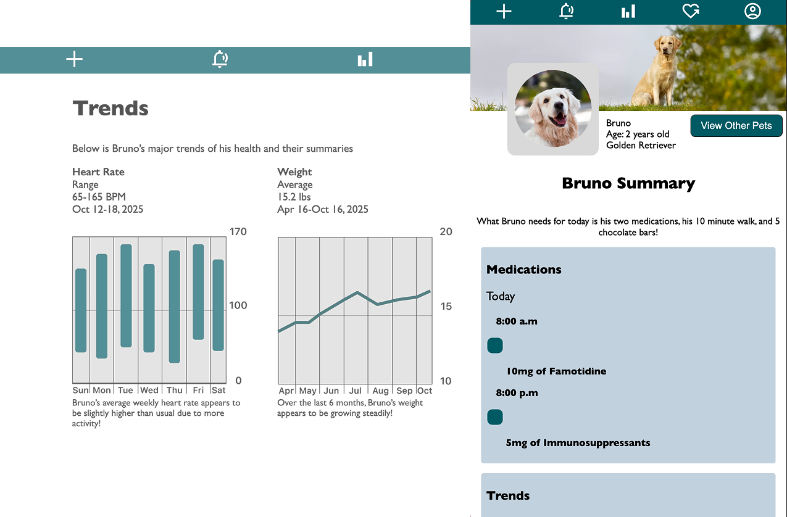
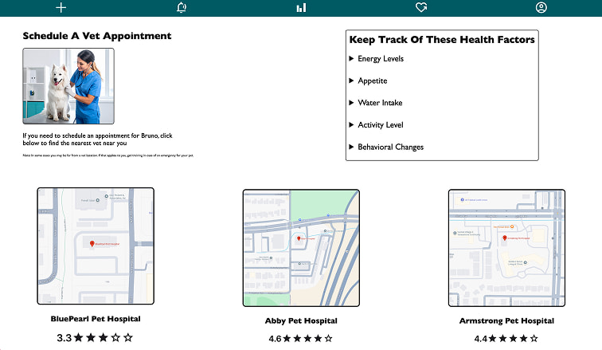
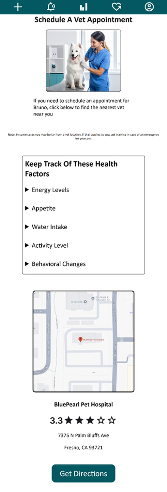
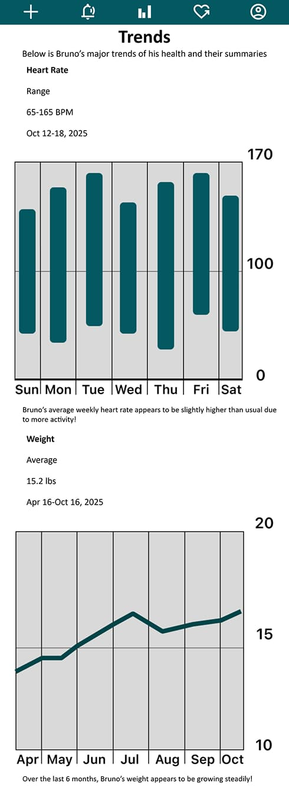
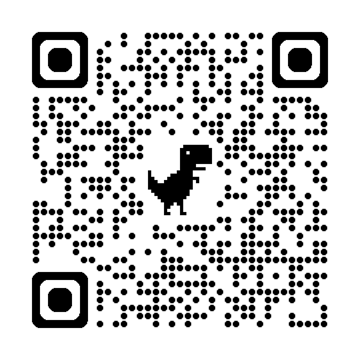

Here is a snapshot of some of the pages you can access via mobile or desktop.
Web Developer • UX Designer
Project Leader • Web Developer • UX Designer

Mateo Siechert
Cristian Barragan

Here is a snapshot of some of the pages you can access via mobile or desktop.
Languages Used
PawPal is a built from the ground up pet wellness tracker that allows users to add pets, add veterinarian appointments, log daily medications, daily walks, health trends, and a built-in to-do list for feeding.
CSS Positioning: I struggled with CSS positioning, specifically display: flex, which had margin errors and the nav bar not working properly. After receiving help from my instructor, I learned how to use translation in CSS to allow for refined positioning and to use margins much more efficiently than before.



QR Code to access PawPal